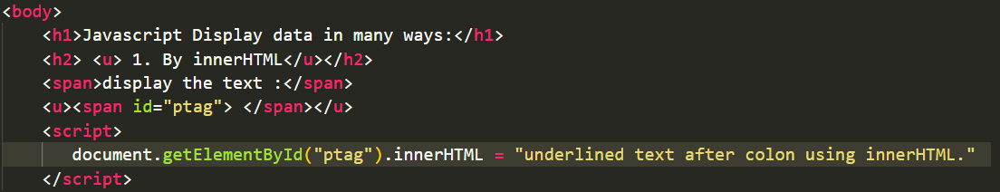
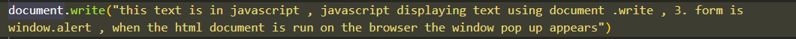

Javascript Display data in many ways:
1. By innerHTML

display the text :
2. By document.write()
use document.write() for testing purposes only , as calling the document.write() after the whole html is loaded will overwrite the html document.
Example of document.write()
3. By Window.Alert()

4. By console log
F12 on your keyboard will activate debugging.
Then select "Console" in the debugger menu.
Then click Run again.
5. Javascript Print